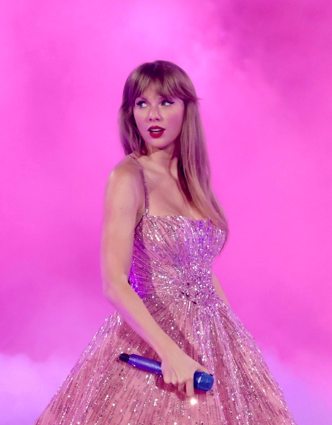
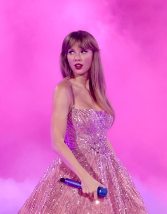

Meet Our Team & Mentors
Founders
Manya Jain
Co-Founder & Executive Director
Passionate archaeologist with a vision to make history and the past more enagaging for the younger generations. Manya designs all our curriculum programs and leads experiential learning initiatives.
Rampalaniappan PL
Co-Founder & Executive Director
An expert prehistorian, dedicated to bringing heritage education to schools across India. He is a master of presenting complex knowlegde and ideas into creative and interactive sessions while also leading some of our best expeditions.
Our Mentors

Dr. AMV Subramaniam
Heritage & Archaeology Mentor
His contributions as the Director of Monuments at Dharohar Bhavan, ASI Headquaters, New Delhi, has constantly inspired us to work on newer and better aspects of heritage learning and accessibilty to common masses and hence his technical guidance constantly pushes us to look out for more and better ways to bring heritage to life for furure generations.

Prof. Jinu Koshy
Heritage Learning & Pedagogy Mentor
Dr. Jinu Koshy is the Excavation In-charge at the Department of Ancient History and Archaeology, University of Madras. He has led 15+ excavations across South India and specializes in Palaeolithic Archaeology, Lithic and Pottery analysis, Rock Art, and Field Archaeology. He has published over 25 research papers and currently studies settlement patterns in the Lower Palar River Basin and Rock Art sites in Kurnool District.
Our Collective Vision
Our team and mentors share a common belief: that experiential learning transforms how children understand and connect with history. Together, we're building a movement to revolutionize heritage education across India.